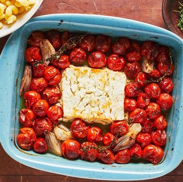
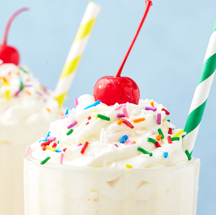
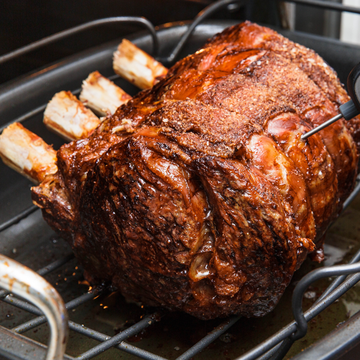

-

烤羊乳酪意大利面
在 400° 的温度下将羊乳酪和西红柿一起烘烤 30 分钟，然后再烘烤最后 10 分钟。在烤箱里烤了 30 分钟后，我发现我的羊乳酪正在向顶部呈现漂亮的金色。为了避免燃烧大蒜和香草等添加物（请参阅我的下一个注释），我认为最好保持温度稳定。 您可以玩添加的不仅仅是西红柿和羊乳酪。切成四等分的青葱将得到 很好吃，果酱，捣碎的大蒜会注入橄榄油。喜欢香料？放入一吨碎红辣椒片。有百里香吗？添加几个小枝以获得朴实的触感。 添加意大利面水会有所帮助。 一勺意大利面水将有助于拉伸你的酱汁，使你的意大利面更光滑、更厚实。 -

完美红薯
1. 把它们洗干净。 2. 在烤盘上铺上箔纸。 3. 所以不要用箔纸包起来？ 4.戳洞！ 5. 烤至变软。 6. 烤它们通常需要多长时间？ 7. 保持干燥。 很多食谱都要求在红薯刺破后用橄榄油摩擦红薯，但我们发现这没有必要——除非你打算吃带皮的红薯！在烘烤过程中，油会帮助皮肤变脆一点，并产生更美味的味道。 烤好后，你可以把它们切开，加一大块黄油，直接挖进去！或者，您可以使用烤焦的坚果肉制作任意数量的菜肴，例如红薯煎饼、红薯面包 或我们最喜欢的 50 多种红薯食谱中的任何一种。只要确保你用叉子或土豆捣碎机捣碎，以获得最好的质地。 -

香草奶昔
4 大勺（约 1 1/2 摄氏度）香草冰淇淋， 1/4 摄氏度。 牛奶， 搅打过的浇头，用于装饰， 洒，用于装饰， 黑樱桃，用于装饰， 在搅拌机中，将冰淇淋和牛奶混合在一起。 倒入玻璃杯中，用搅打过的配料、洒水和樱桃装饰。 -

站立肋骨烤
上等肋骨，也被称为站立肋骨烤，是一块美丽的肉 。每当我们需要真正引人注目的节日烤肉时，我们都会求助于它。 煮熟的上等排骨多汁，味道浓郁，而且制作起来一点也不难。此外，这令人印象深刻：您会让客人 认为 您辛苦了几个小时，但 您的小秘密是毫不费力，而且您的烤箱确实完成了所有工作。